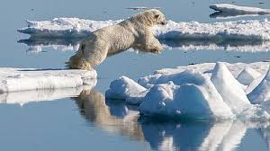

Veranderingen in natuur en samenleving
Klimaatverandering heeft grote gevolgen voor mens en natuur. Een bekend gevolg is de stijging van de zeespiegel. Dat komt onder andere door het smelten van landijs en door het uitzetten van warmer zeewater. Hierdoor neemt het risico op overstromingen toe, vooral in laaggelegen gebieden.
Ook komen er meer extreme weersomstandigheden voor, zoals hittegolven, zware regenval, droogte en stormen. Zulke veranderingen kunnen invloed hebben op landbouw, drinkwater, gezondheid en infrastructuur.
Gevolgen voor ecosystemen
Ecosystemen raken uit balans wanneer temperatuur en neerslag veranderen. Planten en dieren moeten zich aanpassen aan nieuwe omstandigheden. Dat heet adaptatie. Op langere termijn kan natuurlijke selectie ervoor zorgen dat soorten evolueren, maar dat kost veel tijd.
Sommige soorten kunnen niet snel genoeg aanpassen. Dan sterven ze uit. Hierdoor neemt de biodiversiteit af. Minder biodiversiteit maakt ecosystemen kwetsbaarder, omdat voedselketens en leefgebieden verstoord raken.
Invloed op levende en levenloze natuur
In het werkboek staat dat klimaatverandering invloed heeft op zowel de levende als de levenloze natuur. Dat zie je terug in veranderingen in temperatuur, waterkringloop, bodem, ijs, planten en dierpopulaties. Klimaatverandering is dus een breed probleem dat veel onderdelen van de aarde tegelijk raakt.
